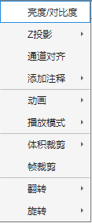
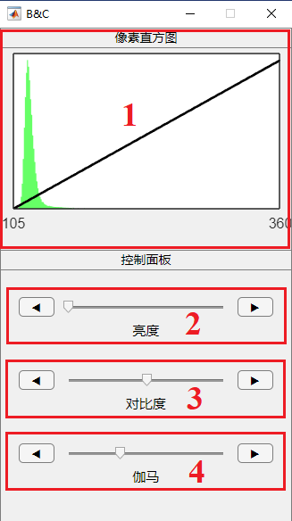
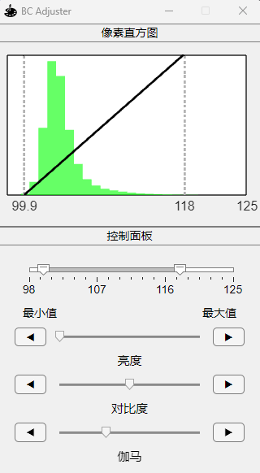
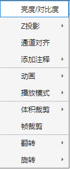

1.2.1 亮度/对比度
 单击图像，选择亮度/对比度，调整亮度、对比度、伽马调整浏览器窗口视觉效果。 注：如果主窗口切换源或更改颜色通道，请单击B&C像素直方图面版区域以更新图像信息。   旧版亮度/对比度校正器 新版亮度/对比度校正器（MATLAB Version >= R2023b）

单击图像，选择亮度/对比度，调整亮度、对比度、伽马调整浏览器窗口视觉效果。
注：如果主窗口切换源或更改颜色通道，请单击B&C像素直方图面版区域以更新图像信息。
旧版亮度/对比度校正器 新版亮度/对比度校正器（MATLAB Version >= R2023b）